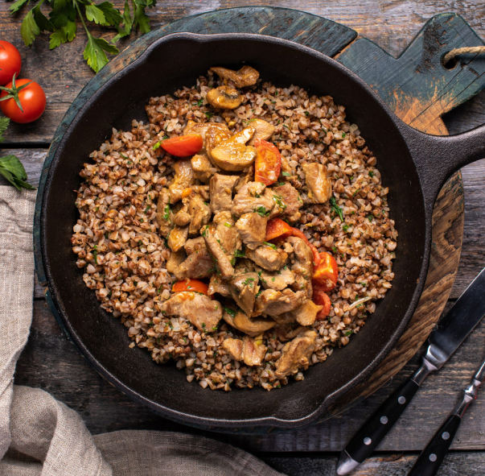

Гречка с овощами и индюшкой
Рецепт:
- Гречневая крупа - 200 г
- Вода - 400 мг
- Морковь - 1 шт
- Лук - 1 шт
- Помидоры черри или обычные
- Растительное масло - 3 ст. л.
- Соль - по вкусу
- Индюшка - 150 г
- Болгарский перец - 1 шт
Приготовление
- Чтобы приготовить гречку с овощами на сковороде надо 200 грамм гречневой крупы обжарить на сковороде 3-5 минут, помешивая. Убрать обжаренную гречку.
- На сковороде разогреть 3 столовых ложки растительного масла. Добавить мелко нашинкованный лук и кубиками нарезанную морковь, добавить кубиками нарезанный болгарский перец и нарезанную индюшку. Готовить, помешивая, на среднем огне 5-7 минут.
- Добавить обжаренную гречку и 1/4 чайной ложки соли. Перемешать гречку с овощами Добавить 400 миллилитров воды и поставить на средний огонь. Готовить 15 минут, пока вода полностью не выкипит, а гречка не будет мягкой и рассыпчатой.